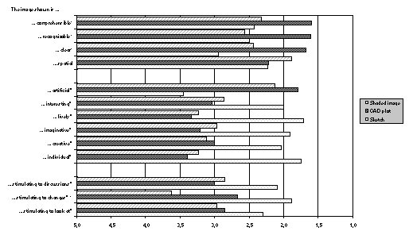

|
Thomas Strothotte, Andreas Raab
University of Magdeburg
Dept. of Simulation and Graphics Universitätsplatz 2 D-39106 Magdeburg
phone: +49 (391) 67 18 773
{tstr, raab} @isg.cs.uni-magdeburg.de
Stefan Laser
University of Magdeburg
Dept. of Psychology Virchowstraße 24 D-39104 Magdeburg
phone: +49 (391) 67 16 554
ls@isg.cs.uni-magdeburg.de
Recent work in computer graphics has resulted in new techniques for rendering so-called non-photorealistic images. While such features are now already appearing in commercially available software, little is known about the effect of non-photorealistic images on users and their usefulness in specific contexts.
In this paper we report on an empirical study with 54 architects who compared the output of a sketch-renderer for producing pencil-like drawings with standard output of CAD systems for architectural designs. The results show that the different kinds of renditions actually have a very different effect on viewers and that non-photorealistic images actually do deserve their place in the repertoire of CAD systems.
There has been a recent flurry of activity in the area of computer graphics away from the traditional photorealistic style of rendering. Rather than to mimic a camera taking a picture of a real scene, several new pieces of work have focused on producing images which look hand-made. Examples of this trend are a renderer which produces images which look like they were done using ink and pens [9][16], pencils [12] and paintbrushes on canvas [10]. Commercial rendering software like IRIS Inventor (Alias®) and KATY (5D Solutions®) are also beginning to offer such rendering possibilities.
At first one may surmise that such features are merely marketing gimmicks to improve the sales of rendering software. In this paper we put this hypothesis to test and study the usefulness of such non-photorealistic rendered images. To do so, we work with a highly interactive sketch-renderer which was designed to produce pencil-like drawings of architectural designs prepared with CAD software. We report on a study with 54 architects who analysed several renditions of the same scene and reported on their impressions.
It is no longer possible to define precisely what is meant when the term "computer graphics" is used in the literature. Most images which reach the eyes of viewers today were processed by computer somewhere along the line, be it by a scanner, a drawing program or a renderer.
Drawing programs and renderers lie on opposite ends of the spectrum with respect to user interaction. The former offer users almost complete freedom to draw an image given certain primitives; even the manipulation of individual pixels is possible. Renderers, on the other hand, read in a geometric model and generally produce an image whose appearance can hardly be modified, except by post-processing [13].
The style of rendering which practically all research has focused on in the last 15 years has been photorealism [3]. Hence users wishing to produce such images have some of the same freedom as a normal camera offers: the camera position and the lighting can be adjusted and in some cases also depth-blurring. Advanced features are often implemented, such as special environmental conditions like fog [2] or unusual perspective transformations [8].
This restriction to photorealism is convenient as its goal is well-defined, which is simply to convince viewers that the image is in fact a photo
[3, plate III.19]. It is easily possible to assess the success or failure of a renderer to reach this goal (at least at a superficial level). Furthermore, photorealism poses no new problems with respect to usability, since the output is (at least in principle) the same as with a camera.
Non-photorealistic rendering software does not define the kind of output as precisely as when photorealism is the goal. Non-photorealistic images vary greatly in style and quality in the same way as human artists renditions vary. Such renderers provide interesting challenges from an algorithmic as well as from an artistic point of view. Lansdown and Schofield [7] recently surveyed the developments in this area.
The introduction of non-photorealism makes it much more difficult to define goals for what the software should actually be able to achieve and how it should be used. In the present context, it is important to note that such software also places a greater emphasis on the user, because he or she must interact with the renderer to fine-tune the image. This includes selecting the overall style of rendering as well as modifying individual features of the image. Hence aspects of human-computer interaction with rendering software are becoming important.
To illustrate how users interact with renderers which produce non-photorealistic images, we shall describe one such system. It is the sketch-renderer, a system developed by the authors [12] for producing images which resemble hand-made drawings with pencil on paper. It is the tool which was used to produce one of the images assessed later on in this paper.
The input to the sketch-renderer is a three-dimensional model in the DXF-format which is commonly used in CAD-software. The sketch-renderer first produces a wire-frame image as is normally produced in CAD. In order to give the user full control over the style of a presentation, the sketch-renderer strictly separates the geometric model from the stylistic information which can be assigned to single objects. This enables the sketch-renderer to read in models which were perhaps intended for another renderer, while keeping separate the stylistic information of which only the sketch-renderer makes use. The user can fine-tune the following parameters with the "point and click” method using the interactive sketch editor:
These parameters can be combined with each other, e.g. the lines used for cross-hatching may be different from those used for contours. Hatching can be used to represent textures and shadows; the latter are calculated depending on a light source. Changes can be seen immediately on the screen and can be saved to so-called configuration file. An impression of how users can work with the sketch-renderer is given in Figure 1.
Figure 1: The interactive sketch-renderer has an easy to use point-and-click interface.
Graphics which are produced with current CAD programs do not reach the expressiveness of hand-made drawings. With the sketch-renderer, by contrast, an architect can produce more individual views of an object being planned; these seem to be appropriate especially in earlier stages of design. In order to verify this, we carried out a survey among potential users of the system. This is described in the following section.
The goal of our study is to compare the usability of computer-generated images with respect to communicative goals during development of design concepts. We use three computer-generated images: an exact CAD plot, a shaded image and a sketch generated by our sketch renderer. The first of these is the "normal" output of CAD software; the second is often available in CAD software (though not used as much in practice), while the third is still at an experimental stage.
We are investigating three aspects of presentations:
Figure 2: The CAD plot
We are interested in the situation in which an architect would use the images. Since an architect's goal is in general to attract attention to the image, we hypothesize that
H1 For presentations of early drafts of architectural designs, sketches are the preferred over CAD plots and shaded images.
Figure 3: The shaded image
Furthermore, we hypothesize that there is a marked difference in the way the three images affect their viewers. To structure our hypothesis, we refer to the classification scheme of Peeck (see Willows and Houghton [15]), who divides the possible effects of an image into three groups:
We hypothesize that
Figure 4: The computer-generated sketch
H2 Sketches perform better in the communication of affective and motivational aspects, while exact plots and shaded images perform better in cognitive aspects.
Finally, we expect the exact plot to arouse more interest in the actual design of the object being visualized, which leads us to the hypothesis that
H3 Sketches stimulate viewers more than shaded images to discuss and actively participate in design development
The psychological context of these hypotheses is taken up in the discussion section later on in the paper.
Subjects. A questionnaire was given to approximate 150 architects and architectural students in several cities in Germany. Of these, 54 (36%) returned it, having answered the questions. Of those returning the questionnaire, 67% replied that they regularly use CAD.
Design. Subjects where shown three different images, each portraying the same object (see Figures 2 to 4) which was designed by students of architecture as a term project. The CAD plot (ordinary wire-frame image with hidden-line removal) was produced with AutoCAD™, the image with constant shading was generated by the RenderMan™ renderer, while the sketch was produced with the sketch-renderer described above. Note that all three images were produced from the same geometric model in the DXF-format.
After being shown the three images, subjects were asked to answer various questions. First, they were asked to say which image(s) they would want to use to show a first draft to a client and which image they would use for a final presentation. They were also asked to provide a verbal explanation of their choice.
Next, subjects were asked about a number of (possible) effects of the images, classified according to Peeck's scheme mentioned above. These were to be rated on a scale of 5 ("strongly disagree") to 1 ("strongly agree"). Subjects were also asked to give an additional verbal judgement about the images, which is not described here but is valuable help for further implementations.
To test the third hypothesis, subjects were asked to say how they would make changes to the design being visualized. They were given four options to choose from:
(a) using a verbal description,
(b) by gesturing or by pointing relative to the image,
(c) by drawing on another sheet of paper, or
Figure 5: The use of sketches, CAD plots and shaded images for the presentation of a first draft versus the presentation in a final presentation.
(d) by drawing directly onto the image.
Of those subjects using CAD, 53% chose the sketch as a suitable way to present a first draft to a client. This is significantly more than those suggesting the shaded image (22%), as well as the exact plot, which was chosen by 33% of subjects.
Subjects preferring the sketch generally argued that it best shows the preliminary character of the draft and does not focus on details which are, at this stage, not yet decided upon. Many of those who chose the shaded image commented that they appreciated the ability to present the spatial concept of the design.
By contrast, only 8% chose the sketch to present a final result to a client, which is significantly less than those choosing the exact plot (50%) and the shaded image (42%) (p < 0.05). Subjects who chose the exact plot or the shaded image often argued that the selection committee "want to see exact renditions”, while those few who choose the sketch commented on its originality and the desire to stand out against competitors. Figure 5 summarizes the results.
Subjects had to assess the impression of the three images in more detail. The results in Figure 6 show that sketches were found significantly more interesting, lively, imaginative, creative, individual and less artificial than both the other media (affective group). Furthermore, they were found to stimulate significantly more to discussions and active changes, in which shaded images performed worst.
In sharp contrast to these affective criteria, the CAD plot performed significantly better in the cognitive group, being more comprehensible, recognizable and clear than both the other media. The shaded image was found to support spatial concepts better, but differences were not significant.

Figure 6: Mean values of the assessment of the effect of the media (CAD users).
The left-most value on the scale (5.0) means complete disagreement,
the rightmost value means complete agreement with statements made
on the y-achsis. * denotes the items in which sketches differ
significantly (p<0.05) from CAD plots and the shaded images.
° denotes the items in which CAD plots differ significantly
(p<0.05) from sketches and shaded images.
Figure 7: How subjects would realize changes in a sketch vs.
in a shaded image (CAD users).
* means a significant (p<0.05) difference between the sketch
and the shaded image.
While the observations so far were concerned with assessing which impression architectural presentations make on viewers, it is an important goal of the communication between architects and their clients to explain ideas mutually and to develop them further. Therefore, an important criterion in the assessment of the effectiveness of a presentation medium is its ability to provoke active participation of the partners within a discussion.
The results in Figure 7 illustrate that in both media, the methods (a), (b) and (c) were used nearly equally often (the differences are not signifcant). However, drawing directly into the image was chosen significantly more often (p < 0.05) in sketches than in shaded images (69% vs. 33%).
All three of our hypotheses could be proven by the experiments carried out. To explain the results, we shall now look at them from a theoretic point of view. We would expect the cognitive effort required by viewers to be greater for sketches than for the other two kinds of images tested. This is because sketches are more irregular in their form, which means that they transport more information to their viewers. This, in turn, increases the cognitive effort required to understand them (see Klix [6]).
Indeed, Weidenmann [13] speaks of normalization demands being placed on a viewer in order to decipher an image. By the above reasoning, these are higher for sketches than CAD plots or shaded images. Applying the ideas of Berlyne's "collative variables" [1], normalization demands lead to curiosity, which in turn is linked to interest and creativity, resulting in a high level of motivation [6].
Going back now to our hypothesis H2, we can explain the less favourable score of the sketch in the cognitive group with the difficulty in deciphering the irregular forms; the resultant ambiguities, however, are then responsible for the better scores in the affective and in the motivational groups.
This reasoning also explains the results of H1. In a first draft, architects reported they want to arouse interest in their designs, which by the reasoning above is higher with sketches. For a final draft, a good score in the cognitive group is more important, hence the shaded images and CAD plots are preferred.
To explain H3, we need to go one step further in the theoretic background. Gombrich [5] speaks of the process of projection of our experience and expectations onto the phenomena seen. This requires firstly empty or vague places in a picture which can act as a "projection screen", and secondly hints to direct the viewer as to how these gaps can be filled. By this reasoning, sketches provide more projection space than shaded images (because in these practically the whole area of the image is filled, and hence cannot act as a projection space quite as well). Sketches also provide more projection space than CAD plots, because there is no room for interpretation as to where and how lines (i.e., edges in the object visualized) meet. More projection space thus can explain the greater willingness of viewers of sketches to enter into a discussion about the design.
These explanations are only rudimentary analyses of the results; more would go beyond the scope of this paper (see [11] for more details).
In this paper we have shown that indeed non-photorealistic images are able to affect viewers of images in a different way than photorealistic images are. Care must be taken not to overgeneralize the results by making specific claims about other kinds of images than the ones evaluated in this paper. However, the present study suggest that sketches in the context of CAD indeed deserve their place in rendering software and can be used in an effective manner by architects. Fine-tuning an image actually changes the way the viewer thinks about the design itself.
An intuitively pleasing result of our study is the significant difference in the way the cognitive and affective factors differ. Affective (i.e., emotional) factors are supported significantly more by sketches, while cognitive factors (like comprehensibility of the image) are significantly better with CAD plots or shaded images.
The results clearly indicate that using sketches encourages discourse about a design. Hence if an architect wishes to enter into such a discussion, a sketch is the medium of choice; if the design is no longer to be altered, CAD plots or shaded images are preferable. This conclusion is in tune with the observations of Yin Yin [17], who contends that sketches are more readily accepted as being incomplete representations than more polished forms of visualization.
We expect the ability to produce non-photorealistic images to alter significantly the way users work with CAD. No longer can users divorce themselves from the way their image looks in the final output; the user must take responsibility for the appearance and also its effect on the viewer. The new freedom which users have will also allow them to make mistakes, both in the equilibrium of the image as well as in the intended effect on the viewer. New concepts will have to be developed to help guide users in their work to fine-tune images for their final presentation.
From the technical point of view, the sketch-renderer must be extended to improve the output for large, complex architectural models. In particular, algorithms and interaction techniques must be found which will enable less detail to be visualized in an image than is actually encoded in the underlying model. This will be of particular importance when using such renditions as to show a first draft of a design to a client.
The bottom line is that the new features of non-photorealism in renderers are definitely worthwhile, as they offer users a new degree of freedom which can be used to affect the viewers of the images. However, users will need to learn more about when to use which image along the lines we have shown in this paper.
The authors wish to thank all those who helped prepare and carry out the survey, among them E. Kernchen and H. Jesse of the Technical University of Berlin.